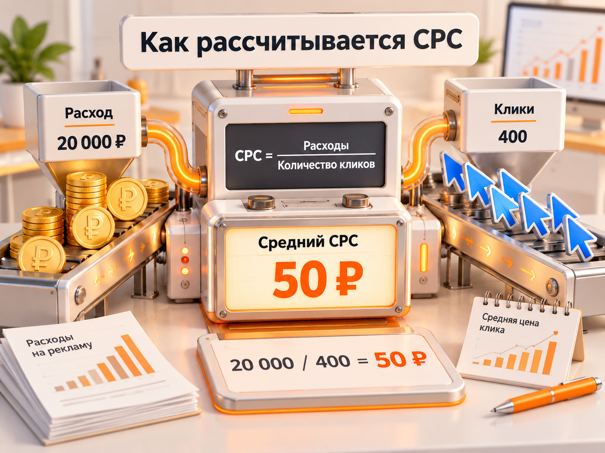
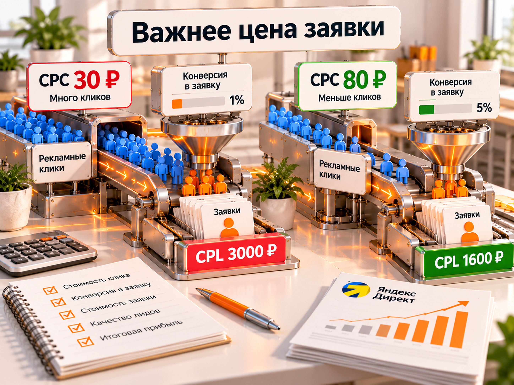

Блог о платном трафике
Цена за клик в Яндекс Директе: что это и как ей управлять
Цена за клик в Яндекс Директе (CPC) показывает, сколько в среднем рекламодатель платит за один переход по объявлению. Показатель рассчитывается делением расходов на рекламу на количество кликов. Например, при расходе 20 000 рублей и 400 кликах средний CPC составляет 50 рублей.
Стоимость каждого перехода не фиксирована. Она определяется рекламным аукционом и зависит от конкуренции, ставок, качества объявлений и других условий показа.
Управлять CPC можно через ставки, настройки стратегии, ключевые фразы, аудитории и объявления. Но для бизнеса важнее не минимальная цена клика, а стоимость привлечения заявки или продажи.
Как рассчитывается CPC
CPC (Cost Per Click) переводится как «стоимость клика». Этот показатель помогает оценивать расходы на привлечение посетителей из рекламы.
Формула CPC = расходы на рекламу / количество кликов.
Допустим, рекламная кампания получила следующие результаты:
- Расход на рекламу: 20 000 ₽.
- Количество кликов: 400.
- Средняя цена клика: 50 ₽.
Расчёт: 20 000 / 400 = 50 ₽.
Средний CPC показывает стоимость перехода за выбранный период. При этом отдельные клики могут стоить по-разному. Например, один переход обойдётся в 20 рублей, другой в 150 рублей, но среднее значение за период составит 50 рублей.
Поэтому оценивать рекламную кампанию по стоимости одного случайного перехода неправильно. Нужна статистика за период, достаточный для анализа.

Чем CPC отличается от ставки и CPA
Эти показатели часто путают, хотя они решают разные задачи.
| Показатель | Что означает | Для чего нужен |
|---|---|---|
| Ставка | Максимальная цена участия в аукционе с учётом корректировок | Управление возможностью получения трафика |
| CPC | Средняя фактическая стоимость клика | Оценка расходов на переходы |
| CPA | Стоимость целевого действия | Оценка расходов на заявки и другие конверсии |
| CTR | Доля кликов от количества показов | Оценка кликабельности объявлений |
Например, рекламодатель установил ставку 100 рублей. Это не означает, что каждый переход будет стоить ровно 100 рублей. Фактическое списание может оказаться меньше.
А если клик стоил 50 рублей, а заявка была получена после 25 кликов, стоимость заявки составит 1250 рублей.
Подробнее о стоимости целевых действий я рассказывал в статье «CPA в Яндекс Директе».
От чего зависит цена клика в Яндекс Директе
Цена клика формируется на аукционе при каждом показе объявления. Поэтому у Яндекс Директа нет единого прайса на переходы для всех рекламодателей.
На стоимость влияют несколько факторов.
Конкуренция рекламодателей
Если по одному поисковому запросу хотят показываться несколько компаний, конкуренция за рекламный трафик может увеличивать стоимость переходов.
Например, за запрос «заказать ремонт квартиры» могут конкурировать строительные компании, ремонтные бригады и посредники.
При этом цена зависит не только от количества конкурентов, но и от их ставок и качества объявлений.
Поисковый запрос и аудитория
Разные запросы отражают разную готовность пользователя к покупке.
Человек, который ищет «купить промышленный компрессор», может находиться ближе к заказу, чем пользователь с запросом «как работает компрессор».
Поэтому коммерческий трафик часто представляет большую ценность для рекламодателей и может стоить дороже информационного.
В РСЯ стоимость также различается в зависимости от аудитории, площадки, устройства и конкретного рекламного аукциона.
Качество объявления и прогноз CTR
На Поиске Яндекс учитывает сочетание ставки, коэффициента качества и прогноза кликабельности объявления.
Это означает, что высокий бюджет сам по себе не гарантирует лучшие условия размещения.
Релевантный заголовок, понятное предложение и соответствие объявления запросу помогают улучшать эффективность рекламы. Однако изменение качества не гарантирует автоматического снижения CPC: окончательная стоимость зависит от аукциона.
Регион и время показа
Стоимость трафика может различаться между Москвой, региональными центрами и небольшими городами.
Конкуренция также меняется в течение суток и недели.
Из-за этого средняя цена клика одной кампании может заметно отличаться в разные периоды даже без изменения её настроек.
Выбранная стратегия
В ручной стратегии рекламодатель задаёт ставки самостоятельно.
В автоматической стратегии Яндекс рассчитывает ставки в соответствии с выбранной целью и установленными ограничениями.
Например, алгоритм может увеличить ставку для пользователя с высокой прогнозируемой вероятностью конверсии и уменьшить для менее перспективного перехода.
Поэтому одинаковые объявления могут получать разную среднюю стоимость клика при использовании разных стратегий.
Почему ставка и фактическая цена клика отличаются
Ставка показывает предельную готовность рекламодателя платить за участие в аукционе, а списываемая цена определяется его результатом.
Предположим, рекламодатель установил ставку 100 рублей за клик. В одном аукционе фактическая стоимость перехода может составить 65 рублей, в другом 85 рублей. Это условные значения для объяснения механики.
На Поиске алгоритм оценивает не только ставки конкурентов, но и прогноз CTR и коэффициенты качества объявлений. Списываемая цена зависит от условий конкретного аукциона.
Дополнительно нужно учитывать корректировки ставок. Они могут изменять исходное значение ставки для отдельных устройств и аудиторий.
Поэтому в статистике полезно различать установленную ставку, среднюю ставку с учётом корректировок и фактическую стоимость клика.
Где посмотреть среднюю цену клика
Посмотреть фактическую стоимость переходов можно в статистике рекламной кампании.
Для подробного анализа:
- Откройте Яндекс Директ.
- Перейдите в раздел «Статистика».
- Откройте «Мастер отчётов».
- Выберите нужную кампанию и период.
- Добавьте показатели «Расход», «Клики» и «Ср. цена клика».
- При необходимости добавьте конверсии, CR и CPA.
Чтобы выяснить, где именно возникают дорогие клики, используйте группировки по поисковым запросам, ключевым фразам, устройствам, регионам и другим доступным параметрам.
Для РСЯ отдельно полезно анализировать площадки размещения.
Средний CPC по всей кампании может скрывать существенные различия между сегментами. Например, часть запросов приносит клики по 30 рублей, а другая по 200 рублей.
Но прежде чем отключать дорогой сегмент, нужно проверить его конверсии.
Подробный порядок работы со статистикой есть в статье «Мастер отчётов Яндекс Директа».
Где можно менять цену клика вручную
Ручное управление доступно в стратегии «Максимум кликов с ручными ставками» для кампаний с показами только на Поиске.
Для изменения ставки:
- Откройте страницу «Кампании».
- Выберите нужную кампанию.
- Перейдите в раздел «Ставки и фразы».
- Найдите нужное условие показа.
- Нажмите на текущую ставку и укажите новое значение.
Если необходимо изменить сразу несколько ставок, выделите соответствующие условия показа и используйте «Действия» - «Мастер ставок».
В кампаниях с показами в РСЯ либо одновременно на Поиске и в РСЯ ручное управление ставками недоступно.
Важно учитывать, что даже в ручной стратегии алгоритмы Яндекса могут корректировать ставки с учётом прогнозируемой вероятности целевых действий.
Поэтому ручное управление не означает полностью фиксированную стоимость каждого клика.
Как управлять CPC в автоматической стратегии
В автоматических стратегиях рекламодатель не назначает отдельную ставку для каждой ключевой фразы. Вместо этого он задаёт ограничения и цели, а алгоритм распределяет ставки между аукционами.
Основные варианты управления отличаются.
| Стратегия | Чем управляет рекламодатель | На что ориентируется система |
|---|---|---|
| Максимум кликов с ручными ставками | Ставками по условиям показа | Получение трафика с учётом ставок и других ограничений |
| Максимум кликов | Средней ценой клика или бюджетом | Получение максимального количества кликов |
| Максимум конверсий | Целевой стоимостью конверсии, бюджетом или ДРР в зависимости от настройки | Получение целевых действий |
Ограничение по средней цене клика
В стратегии «Максимум кликов» можно указать желаемую среднюю стоимость перехода.
Например, рекламодатель задаёт 60 рублей.
Алгоритм может покупать отдельные клики дороже или дешевле, стремясь выдерживать установленный средний CPC.
Но здесь есть важные условия.
По документации Яндекса, ограничение рассчитывается в рамках календарной недели. Для его соблюдения кампания должна работать без изменений и остановок всю неделю.
Кроме того, стратегия эффективнее при объёме более 100 кликов в неделю. При небольшом количестве переходов по низкочастотным фразам средняя цена может превысить заданное значение, вплоть до двукратного отклонения.
Установленный средний CPC не является гарантированной ценой каждого отдельного перехода.
Когда лучше управлять CPA, а не CPC
Если задача рекламы заключается в получении заявок или продаж, часто разумнее использовать стратегию, которая оптимизирует конверсии.
Например, бизнес может быть готов платить 2000 рублей за заявку.
Алгоритм будет подбирать ставки с учётом прогнозируемой вероятности достижения цели, а не просто стремиться получить максимально дешёвые переходы.
Это особенно важно в конкурентных тематиках, где дорогие клики могут приносить более качественных клиентов.
При этом эффективность автоматической стратегии зависит от корректности аналитики, выбранных целей и доступных данных о конверсиях.
Сколько стоит клик на Поиске и в РСЯ
Универсальной цены клика для Поиска и РСЯ нет. Эти площадки отличаются способом привлечения аудитории и условиями рекламного аукциона.
| Критерий | Поиск Яндекса | РСЯ |
|---|---|---|
| Основной принцип | Пользователь ищет информацию, товар или услугу | Реклама показывается на площадках сети |
| Характер спроса | Часто уже сформированный | Может быть как сформированным, так и потенциальным |
| CPC | Зависит от поискового аукциона | Зависит от аудитории и аукциона площадки |
| Оценка качества | Запросы, конверсии, стоимость заявок | Аудитории, площадки, конверсии, стоимость заявок |
Средний CPC в РСЯ нередко бывает ниже, чем на Поиске, но это не означает, что заявки из РСЯ обязательно дешевле.
Например, переходы по 20 рублей с конверсией 0,5% дают стоимость заявки 4000 рублей. А поисковые клики по 80 рублей с конверсией 4% дают стоимость заявки 2000 рублей.
Это условный расчёт, показывающий влияние конверсии на экономику рекламы, а не средние показатели рекламных площадок.
Поэтому сравнивать Поиск и РСЯ только по цене перехода неправильно. Подробнее об их особенностях я писал в статье «Поиск или РСЯ в Яндекс Директе».
Как узнать примерную цену клика до запуска
Для предварительной оценки можно использовать инструмент «Прогноз бюджета» в Яндекс Директе.
Он позволяет выбрать регион, ключевые фразы и период, после чего получить расчёт предполагаемых показов, переходов и расходов на Поиске.
Однако прогноз не гарантирует реальную стоимость кликов. После запуска конкуренция, кликабельность и другие условия могут отличаться от расчётных.
Поэтому прогноз подходит для первоначального медиапланирования, но не заменяет анализ фактических результатов кампании.
Почему дешёвые клики не всегда выгоднее дорогих
Низкий CPC сам по себе не означает эффективную рекламу.
Представим две кампании с разной стоимостью переходов.
| Показатель | Кампания 1 | Кампания 2 |
|---|---|---|
| Средняя цена клика | 30 ₽ | 80 ₽ |
| Клики | 1000 | 300 |
| Расход | 30 000 ₽ | 24 000 ₽ |
| Конверсия в заявку | 1% | 5% |
| Заявки | 10 | 15 |
| Стоимость заявки | 3000 ₽ | 1600 ₽ |

Это условный пример.
Во второй кампании клик стоит почти в три раза дороже. Однако рекламодатель получает 15 заявок вместо 10, а рекламные расходы оказываются ниже.
Причина в разной конверсии трафика.
Именно поэтому я не рекомендую снижать CPC только потому, что он кажется высоким.
Если более дорогие переходы приводят больше целевых клиентов, механическое уменьшение ставок может снизить результативность рекламы.
Кроме того, необходимо учитывать качество заявок. Даже одинаковый CPL не означает одинаковую эффективность, если обращения сильно различаются по вероятности продажи.
Как понять, сколько можно платить за клик
Допустимую стоимость клика нужно рассчитывать от экономики бизнеса, а не от средней цены рекламы в конкретной нише.
Если известны целевая стоимость заявки и конверсия из клика в заявку, можно определить ориентир CPC.
Допустимый CPC = целевой CPA × конверсия из клика в заявку.
При этом процент конверсии необходимо перевести в десятичную дробь.
Допустим:
- Целевая стоимость заявки: 2000 ₽.
- Конверсия из клика в заявку: 4%.
- Конверсия в расчёте: 0,04.
Получаем:
2000 × 0,04 = 80 ₽.
При таких условиях средняя цена клика до 80 рублей соответствует заданной стоимости заявки.
Теперь проверим расчёт на рекламном бюджете.
При расходах 24 000 рублей и CPC 80 рублей кампания получит приблизительно 300 кликов.
Если конверсия составит 4%, из этих переходов получится около 12 заявок.
24 000 / 12 = 2000 ₽ за заявку.
Все значения здесь расчётные. Фактические клики и конверсии могут отличаться.
Важно, чтобы сам целевой CPA был обоснован экономикой бизнеса: средним чеком, маржинальностью, конверсией заявки в продажу и допустимыми расходами на привлечение клиента.
Если целевая стоимость заявки рассчитана неправильно, формула допустимого CPC тоже даст неверный ориентир.
Как снизить среднюю цену клика без потери заявок
Снижать CPC имеет смысл, когда текущая стоимость переходов ухудшает рекламную экономику.
Я бы начинал не с уменьшения всех ставок, а с поиска причин дорогого или неэффективного трафика.
1. Проверить реальные поисковые запросы
Посмотрите, по каким запросам пользователи переходят на сайт.
Если в статистике обнаружены нецелевые запросы, их можно исключить с помощью минус-фраз и уточнения условий показа.
Но не стоит автоматически исключать каждый дорогой запрос. Сначала проверьте, приводит ли он заявки и продажи.
Для этой работы пригодится инструкция по сбору и добавлению минус-фраз.
2. Улучшить объявления
Проверьте соответствие заголовков и текстов поисковым запросам.
Объявление должно понятно объяснять предложение и привлекать именно потенциальных покупателей.
Повышение релевантности может улучшить CTR и показатели качества, влияющие на участие в аукционе.
3. Проверить регионы и устройства
Сравните стоимость кликов, конверсию и CPA между регионами и устройствами.
Если один сегмент регулярно расходует бюджет без полезных результатов, есть основания пересмотреть его настройки.
При этом решение желательно принимать на достаточном количестве данных.
4. Разобрать трафик РСЯ
Оцените площадки, аудитории и качество получаемых конверсий.
Низкий CPC в РСЯ может сочетаться со слабой конверсией в заявки. И наоборот, более дорогие размещения иногда дают качественную аудиторию.
Не нужно отключать площадки только из-за стоимости отдельного клика. Сначала оцените результат.
5. Пересмотреть ограничения стратегии
Если используется ручное управление, можно изменить ставки для отдельных условий показа.
В автоматической стратегии стоит проверить установленную среднюю стоимость клика, бюджет, цели и другие ограничения.
Слишком жёсткое ограничение CPC способно сократить объём показов и кликов, а не просто сделать рекламу дешевле.
6. Работать над конверсией сайта
Улучшение сайта не обязательно снизит стоимость самого перехода, но может уменьшить допустимые расходы на получение заявки.
Например, при CPC 80 рублей:
- Конверсия 2% означает CPA 4000 ₽.
- Конверсия 4% означает CPA 2000 ₽.
- Конверсия 8% означает CPA 1000 ₽.
Иными словами, при одинаковом CPC улучшение конверсии с 2% до 4% вдвое уменьшает расчётную стоимость заявки.
Поэтому иногда выгоднее улучшить посадочную страницу, чем пытаться дополнительно снизить цену клика.
Почему CPC растёт, хотя настройки не менялись
Цена клика может увеличиваться без действий рекламодателя, поскольку рекламный аукцион постоянно меняется.
Основные возможные причины:
- Конкуренты увеличили ставки или активность.
- Изменилась структура поисковых запросов.
- Выросла доля более дорогих регионов или устройств.
- Изменились прогнозируемая кликабельность и качество объявлений.
- Автоматическая стратегия перераспределила трафик.
- Изменился состав аудитории или площадок размещения.
Чтобы выяснить причину, сравните одинаковые по продолжительности периоды с учётом сезонности.
Посмотрите не только CPC, но и количество кликов, расход, конверсию, CPA и распределение трафика по сегментам.
Если средний CPC вырос, но стоимость качественной заявки снизилась, увеличение цены перехода не обязательно является проблемой.
Если одновременно растут CPC и CPA, а количество заявок сокращается, необходимо искать причину в структуре трафика, аукционе, стратегии или конверсии сайта.
Какая цена клика в Яндекс Директе считается нормальной
Нормальной считается та цена клика, при которой реклама приносит нужный бизнесу результат с приемлемыми расходами.
Универсального показателя для всех тематик нет.
Для одного бизнеса переход за 300 рублей может быть выгодным, а для другого даже 30 рублей окажутся слишком дорогими.
Чтобы оценить собственный CPC, нужно учитывать:
- Допустимую стоимость заявки или продажи.
- Конверсию из клика в целевое действие.
- Качество полученных обращений.
- Маржинальность бизнеса.
- Количество потенциальных клиентов, которое удаётся привлечь.
Главный принцип управления CPC в Яндекс Директе простой: не минимизировать цену клика любой ценой, а получать максимально выгодные для бизнеса заявки и продажи.